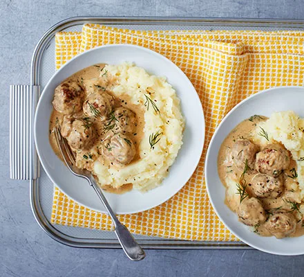

Swedish-style sausage meatballs
DESCRIPTION
The easiest meatball recipe you could ever hope to
find, with a creamy dill and mustard sauce - a
quick and tasty weeknight supper
Source
Ingredients
- 450g pork sausages, skin removed
- 1 tbsp oil
- 2 garlic cloves, crushed
- 1 tbsp Dijon mustard
- 300ml tub half-fat crème fraîche
- 1/2 small pack dill, finely chopped
- mashed potato, to serve
Method
Step 1
Roll the sausagemeat into 20 balls the size of cherry
tomatoes. Heat the oil in a frying pan and brown
the meatballs for 8-10 mins.
Step 2
Stir in the garlic, mustard and crème fraîche, bubble
to thicken for about 10 mins, then stir in the dill.
Grind over some black pepper just before serving,
with mashed potato on the side.
Recipe from Good Food magazine, January 2016
Also try these other dishes
Back to top